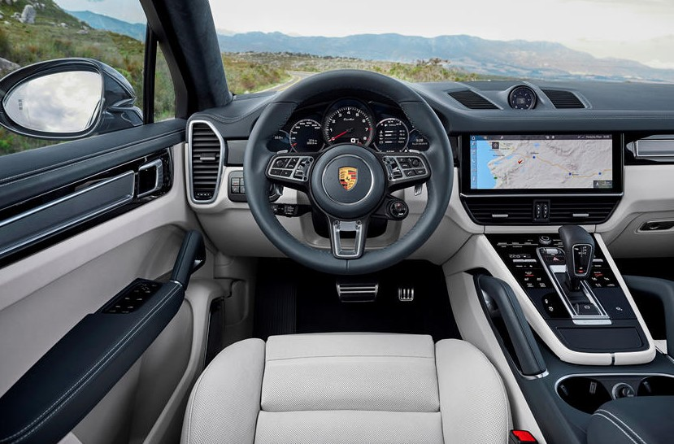
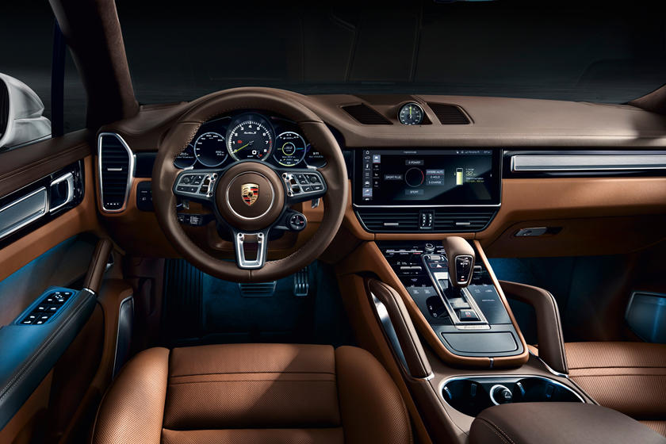
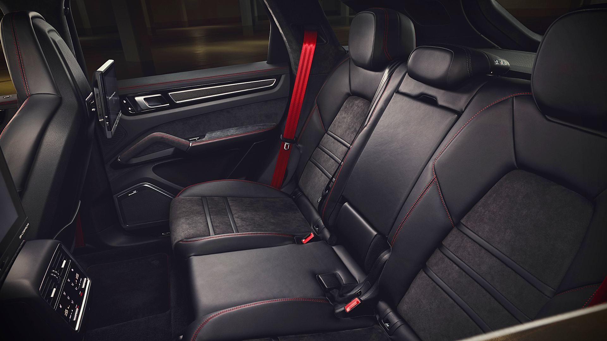

The Porsche Cayenne is a series of mid-size luxury crossover sport utility vehicles manufactured by the German automaker Porsche since 2002, with North American sales beginning in 2003. It is the first V8-engined vehicle built by Porsche since 1995, when the Porsche 928 was discontinued>
It's not just about the noise, though. The GTS is a capable performance SUV by almost every measure. With standard-fit adaptive dampers, the large SUV is happy to act like a sports car – surprisingly agile and remaining pleasingly flat even under harder acceleration and cornering
 Red: R1 980 000.00
Grey: R1 900 000.00
Black: R2 180 000.00
We have 6 Porsche Cayenne Coupe GTS 2020 available in store.
| Type | Brand new |
|---|---|
| Engine type | twin-turbo 2.9-liter V6 |
| Combined fuel consumptions in 1/100km | 26.4 |
| Top speed in km/h | 270 |
| Gross weight limit in kg | 2865 |